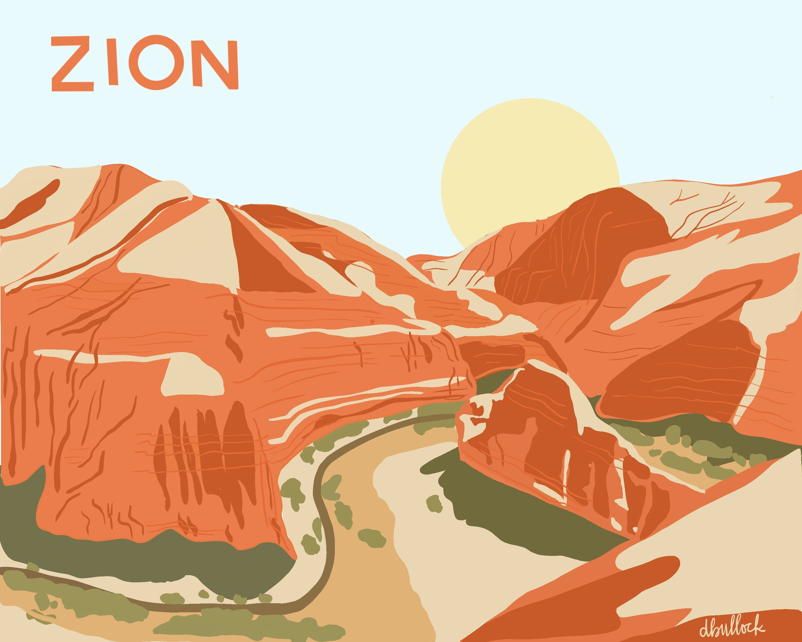

Overview Utah and his best places to visit come take a look and see are wonderfull places that you need to know
Purpose
The Purpose of the page it's to let know the special that it is Utah for their beautiful places and the recreational activities that you can do.
Audience
The State of Utah has some beautiful places to visit and it is perfect for all types of audience for families, couples of any age from very young to older adults due to its canyons and mountains that can be very significant, you can even como alore to conncet with the nature.
|Zion National Park|
Webside Logo
Style Guide
Color Palette
Weather
The weather in general in the state of utah it's a desert so in spring, summer it has pretty good weather it can goes warn to hot and cold with can be perfect to do hikes
Amezing Views
Zion National it's a beautiful small town Sprindale with cultural heritage you can find local art and souvenirs it has really good restaurants you can find in a range of medium to expansive prices but it's totally worth it to live the experience and sit in the streets and just watch the wonderfull sunset with one of the deliciuos ice cream chracteristics of the town
Zion Canyon Trails
It has the best trail perfect to hide an excelent way to have vacation and exercised the most populars are Emerald Pools Trail, this has an attraction crost a river along the trail, which is very beautiful, has an incredible view, it last approximately 9 hours, it is an increidible experience to reach the end, besides being refreshing. Annother of its famous is Angels Landing, this is shorter, it lasts from 3 to 4 hours, it is more complex, but reaching the top is an increidible experience that is totally worth it to see its incredible mountains.